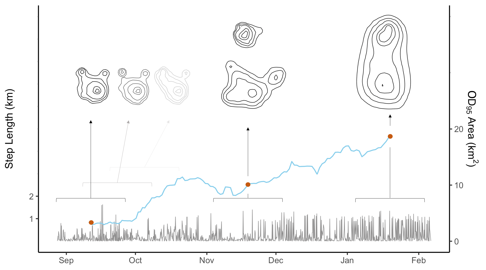
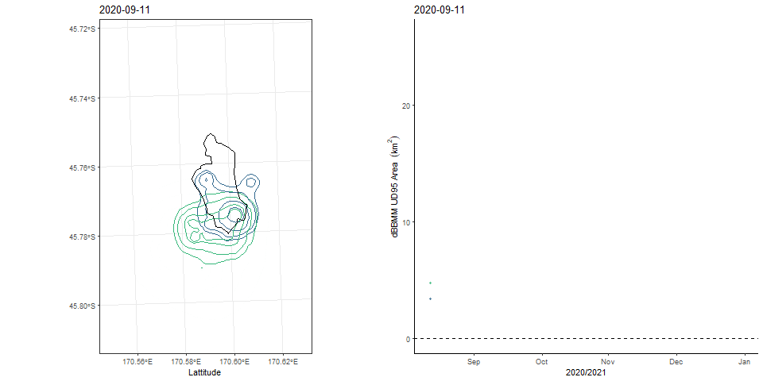
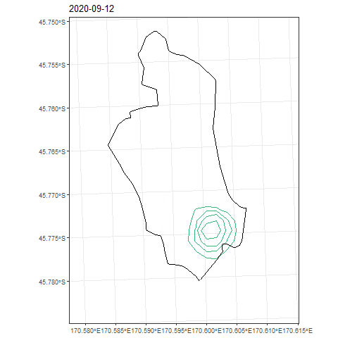
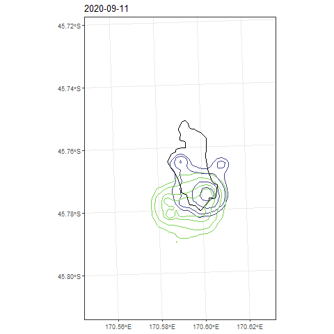
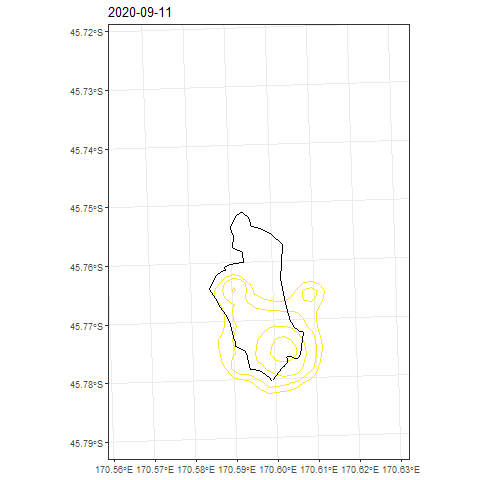

Dynamic Space Use
Individual-level differences in animal spatial behavior can lead to differential exposure to risk. We assessed the risk-exposure of a reintroduced population of kākā (Nestor meridionalis) in a fenced reserve in New Zealand by GPS tracking 10 individuals and comparing the proportion of each individual’‘s home range beyond the reserve’‘s fence in relation to age, sex, and fledging origin. To estimate dynamic space use, we used a sweeping window framework to estimate occurrence distributions (ODs) from temporally overlapping snapshots. For each OD, we calculated the proportion outside the reserve’‘s fence to assess temporal risk exposure, and the area, centroid, and overlap to represent the behavioral pattern of space use. Home range area declined significantly and consistently with age, and the space use of juvenile kākā was more dynamic, particularly in relation to locational changes of space use. The wider-ranging and more dynamic behavior of younger kākā resulted in more time spent outside the reserve, which aligned with a higher number of incidental mortality observations. Quantifying both home range and dynamic space use is an effective approach to assess risk exposure, which can provide guidance for management interventions. We also emphasize the dynamic space use approach, which is flexible and can provide insights into a species’’ spatial ecology.
Description
A methodological contribution of this paper is the sweeping window dynamic space use approach. We think this provides a new angle for evaluating space use by assessing how it changes through time. In our case there were young and old kākā in Orokonui Ecosanctuary, and we found that the younger kākā were more dynamic in their space use, which led to more time spent outside the reserve. This was associated with a higher number of incidental mortality observations.

In the animation below the right panel is the area contained within the 95% contour of a dynamic Brownian Bridge Movement Model (dBBMM) occurrence distribution (OD).

It isn’t clear which are the young and old individuals, but we can plot them separately to illustrate the differences.
Older kākā (5 years or older)
The older individuals had smaller home ranges and less dynamic space use.

Younger kākā (3 years of younger)
The younger individuals had much larger home ranges which were more dynamic.

You might also spot that there are two individuals that overlap a lot in their space use, which change in a similar way through time. These two individuals were Orokonui-fledged juveniles (rather than captive-raised) that appear to display exploratory behaviour, which is largely outside of the fence in the latter part of the tracking period.

For more scripts and data, please visit the GitHub repository: GitHub repo: https://github.com/swforrest/Kaka_HR_DynamicSpaceUse